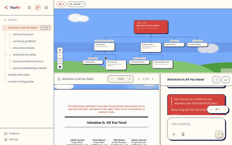

Syflo: turn one long chat into a tree of branches
Open-source app · September 2026 · MIT license
An AI chat app built for learning: one main chat, a branch for every side question, and the paper or video you're reading stays visible the whole time. Bring your own key — or run it fully offline on a local model.